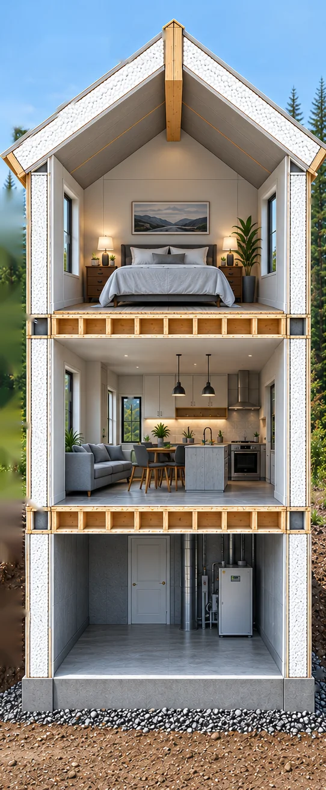

How does a Titanwall
building go together?
It’s easier to understand when you can see inside the building.
One engineered layer on the next.
When people first discover Titanwall, one of the biggest questions is simply: how does it all go together? Think of it almost like a pancake system — one engineered layer building on the next.
Titanwall MGO SIP walls create the exterior structure and the insulated envelope. At each floor level, the wall is capped with the required lumber plate, the floor joists bear on top, and OSB floor sheathing runs across the floor system. The next level of Titanwall MGO SIP panels is then installed above — and the process continues upward.
- Wall
- Top plate
- Floor joists
- OSB floor sheathing
- Wall
- 5Upper Titanwall MGO SIP wallMGO on both sides
- 4OSB floor sheathingEdge to edge
- 3Floor joistsEngineered wood or lumber
- 2Lumber top plateCaps the wall below
- 1Lower Titanwall MGO SIP wallMGO on both sides
See the building one piece at a time.
Scroll through the building from the ground up — each part lights up as you reach it.

-
01
Foundation / frost walls
Titanwall MGO SIP panels can continue the insulated building system below the main-floor walls, where specified for the project.
- Titanwall MGO SIP panels
- MGO on both sides
-
02
Main-floor system
A lumber top plate, floor joists and OSB floor sheathing create the bearing floor assembly.
- Lumber top plate
- Floor joists
- OSB sheathing, edge to edge
-
03
Main-floor walls
Titanwall MGO SIP panels form the exterior wall system.
- Titanwall MGO SIP panels
- MGO on both sides
-
04
Second-floor system
The same straightforward bearing-floor principle happens again: wall, plate, joists, sheathing — then the next SIP wall.
- Lumber top plate
- Floor joists
- OSB sheathing, edge to edge
-
05
Second-storey walls
Another level of MGO SIP panels continues the exterior envelope upward.
- Titanwall MGO SIP panels
- MGO on both sides
-
06
Roof
Titanwall MGO SIP roof panels meet at the engineered ridge beam, bringing the insulated system right to the top of the building.
- Titanwall MGO SIP roof panels
- Engineered ridge beam (lumber)
The exact connections, lumber sizing, fastening and structural requirements are determined for each engineered project — they aren’t one universal detail.
Most building websites show you the finished kitchen. We want to show you the building behind it.
When the home is complete, you’ll see flooring, drywall, cabinetry, siding and beautiful finishes. But underneath those finishes is the part that determines how the building is put together.
Titanwall’s system combines MGO sheathing, rigid insulation and engineered connections into a building envelope designed to go together efficiently — with fewer envelope materials, fewer trades, minimal site waste and a faster path to lockup.
Because finishes make your home yours.
The structure underneath is what makes it perform.
Look closer at the wall.
What’s behind your outlet?
How electrical goes in without a separate poly vapour barrier, through chases pre-planned in the insulation core.
See the electrical →The Panel System
How a single panel is built: five-layer construction, hydraulic pressing, CNC machining, specifications and fire performance.
See the engineering →Why Titanwall
Side by side with stick framing and poured concrete, and what the cost difference looks like over the life of a home.
Read the comparison →